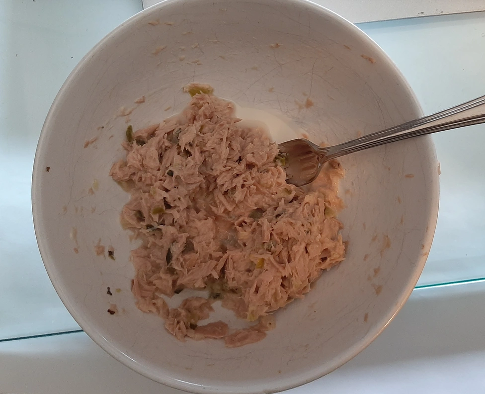

Simple Tuna Salad

- ⏲️ Prep time: 5 min
- üçΩÔ∏è Servings: 3
Ingredients
- 1 (7 oz) can white tuna, drained
- 6 tablespoons mayonnaise
- 1 tablespoons sweet pickle relish
- A pinch of garlic powder (optional)
- 2 tablespoons white vinegar or lemon juice (optional)
- 1 cup shredded cheese (optional)
- 1 chopped hard-boiled egg (optional)
Directions
- In a medium bowl, stir together tuna, mayonnaise, and relish.
- Add optional ingredients like vinegar, cheese or hard-boiled eggs if wanted.
- Season with garlic powder, salt, and pepper if wanted.
Contribution
- scary90
- Tait Hoyem - website